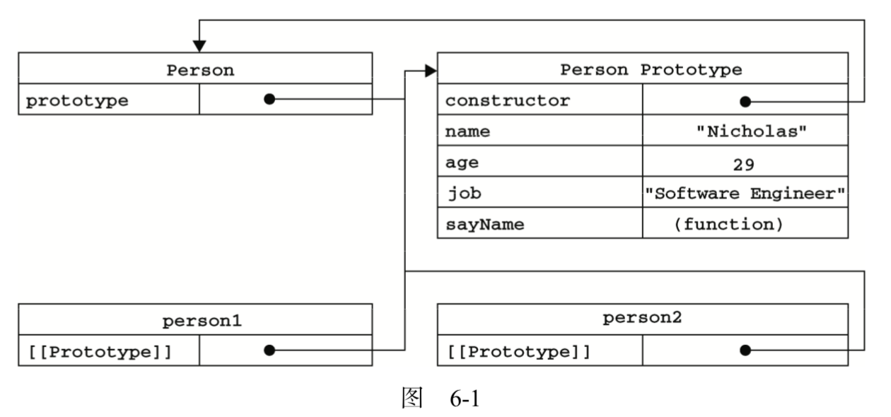

最近面试，有被问到关于原型链及继承的知识，于是系统的整理一下。
对象
编程语言的对象，成功的流派使用”类”的方式来描述对象。Javascript早期用『原型』的方式来描述对象。
对象的特点
- 对象具有唯一标识性：即使两个完全一样的对象，也并非同一个对象。
- 对象有状态：同一个对象可能处于不同的状态之下。
- 对象有行为：对象的状态可能因为它的行为产生变迁。
唯一标识性：1
2
3var o1 = {a: 1};
var o1 = {a: 1};
console.log(o1 == 02); // false
状态和行为特征在 javascript 中统一抽象为”属性”。
除对象基本特征外，javascript 的对象具体高度的动态性，因为 javascript 赋予了使用者在运行时为对象添改状态和行为的能力。也就是说：1
2
3var o = {a: 1};
o.b = 2;
console.log(o.a o.b); // 1 2
可以在定义对象之后再去添加属性。
为了提高抽象能力，javascript 属性提供了数据属性和访问器属性（getter/setter） 两类。
创建对象
Javascript 通过 new 关键字来创建一个对象，new 关键字做了什么？
- 创建一个对象
- 将对象的原型（__proto__）指向构造函数的原型（prototype属性）
- 将构造函数内部的 this 指向这个空对象，执行构造函数的逻辑
- 如果构造函数内部没有返回对象，则返回创建的对象。
具体实现为：1
2
3
4
5
6
7
8
9
10
11
12
13
14
15
16
17
18
19
20
21
22function objectFactory(...args) {
// 取出第一个参数（构造器），并从参数中删除。
const Constructor = args.shift();
// 创建一个空对象，并将空对象的_proto_属性指向构造函数的 prototype 属性
// 不建议直接操作_proto_属性（obj.__proto__ = Constructor.prototype）
const obj = Object.create(constructor.prototype);
// 执行构造器， 将构造函数内的 this 指向为 obj
var result = Constructor.apply(obj, args);
// 如果构造器返回对象则返回这个对象，否则返回新建的对象。
return (typeof result === 'object' && result != null) ? result : obj;
};
// 使用方式
function Person(name) {
this.name = name
}
const person = new objectFactory(Person, 'season')
console.log(person)
原型及原型链
用 <

总结下来：
- 每个函数都有一个 prototype 指向其原型（构造函数.prototype === 原型）
- 每个原型的 constructor 属性都指向该构造函数（原型.constructor === 构造函数）
- 每个实例（对象）都有一个 __proto__ 属性指向该构造函数的原型（实例.__proto__ === 原型）
继承
原型链继承
关键点：子类原型继承父类的实例1
Child.prototype = new Parent()
示例：1
2
3
4
5
6
7
8
9
10
11
12
13
14
15
16
17
18
19function Child(name) {
this.name = name;
}
Child.prototype = new Parent()
function Parent(name) {
this.name = name;
this.list = [1, 2, 3];
}
Parent.prototype.getName = function() {
return this.name
}
var child1 = new Child('child1');
console.log(child1.getName()); // child1
child1.list.push(4);
var child2 = new Child('child2');
console.log(child2.getName()); // child2
console.log(child2.list); // [1, 2, 3, 4]
缺点：
- 当父类构造函数有引用类型时，该引用类型会被所有子类所共享（修改 child1 的 list 属性时，chil2 也会修改）
- 创建子类时，不能向父类构造函数传递参数
构造函数继承
关键点：在子类构造函数内调用父类构造函数方法，可以向父类传递参数。1
2
3
4function Child (args) {
// ...
Parent.call(this, args)
}
示例：1
2
3
4
5
6
7
8
9
10
11
12
13
14
15
16
17
18
19
20function Child(name, args) {
this.name = name;
Parent.call(this, args)
}
function Parent(name) {
this.name = name;
this.list = [1, 2, 3];
}
Parent.prototype.getName = function() {
return this.name
}
var child1 = new Child('child1', 'parent1');
console.log(child1.getName()); // Uncaught TypeError: child1.getName is not a function
child1.list.push(4);
console.log(child1.list) // [1, 2, 3, 4]
var child2 = new Child('child2', 'parent2');
console.log(child2.list); // [1, 2, 3]
可以向父类传递参数，也解决了上述共享父类引用类型的问题
缺点：不能继承父类原型上的方法。（上述child1.getName()获取不到）
组合继承
关键点：结合前面两种方式，使用原型链实现对原型属性和方法的继承，通过借用构造函数实现对实例属性的继承。1
2
3
4
5
6
7function Child (args1, args2) {
// ...
this.args1 = args1
Parent.call(this, args2)
}
Child.prototype = new Parent()
Child.prototype.constrcutor = Child
示例：
1 | function Child(name, args) { |
缺点：会调用两次父类构造函数，Parent.call(this, args)会调用一次，Child.prototype = new Parent();还会调用一次。
原型式继承
原型式继承没有严格意义上的构造函数，他的想法主要是借助原型可以基于已有的对象创建新对象，也就是一个对象以另一个对象为基础，根据需求传入自己的属性。
1 | function object(o) { |
在 object 内部先创建了一个临时构造函数，将传入的对象作为构造函数的原型，返回临时构造函数的实例。
ECMAScript5 通过加入Object.create()方法规范化了原型式继承。
示例：1
2
3
4
5
6
7
8
9
10
11
12
13
14
15
16
17
18function object(o) {
function F() {}
F.prototype = o;
return new F();
}
var parent = {
name: 'parent',
list: [1, 2, 3]
}
var child1 = object(parent);
child1.name = "child1";
console.log(child1.name); // 'child1'
child1.list.push(4);
console.log(child1.list); // [1, 2, 3, 4]
var child2 = object(parent);
console.log(child2.list); // [1, 2, 3, 4]
可以看到用 object 的方式，父类的引用类型共享的问题还是存在，因为 object 方法其实是做了一层浅拷贝，所以父类的引用类型始终会共享。
在不考虑构造函数，只想基于一个对象生成另一个对象的情况下，原型式继承是比较适用的。
寄生式继承
和原型式继承类似，也是通过创建一个封装继承过程的函数，在函数内部以某种方式增强对象，最后返回对象。
1 | function createAnother(original){ |
同上面原型式继承类似，在不考虑构造函数的情况，寄生式继承是一种有用的模式。
寄生组合式继承
因为组合式继承会调用两次构造函数，寄生组合式继承通过寄生式继承来继承超类的原型，避免在指定子类原型的时候调用父类构造函数。1
2
3
4
5
6
7
8
9
10
11
12
13
14
15
16
17
18
19
20
21
22
23
24
25
26
27
28
29
30
31
32function object(o) {
function F() {}
F.prototype = o;
return new F();
}
function inheritPrototype(subType, superType){
var prototype = object(superType.prototype);
prototype.constructor = subType;
subType.prototype = prototype;
}
function Parent(name) {
this.name = name;
this.list = [1, 2, 3];
}
Parent.prototype.getName = function() {
return this.name
}
function Child(name, args) {
this.name = name;
Parent.call(this, args); // 通过构造函数来继承属性
}
inheritPrototype(Child, Parent); // 通过寄生式继承来继承父类的原型
var child1 = new Child('child1', 'parent1');
console.log(child1.getName()); // parent1
child1.list.push(4);
console.log(child1.list) // [1, 2, 3, 4]
var child2 = new Child('child2', 'parent2');
console.log(child2.list); // [1, 2, 3]
使用 Object.create() 替代上述的 object();1
2Child.prototype = Object.create(Parent.prototype);
Child.prototype.constructor = Child;
ES6 继承
ES6 通过 extend 实现继承。1
2
3
4
5
6
7
8
9
10
11
12
13
14
15
16
17
18
19
20
21
22
23
24class Parent {
constructor(){
this.name = 'parent';
this.list = [1, 2, 3];
}
getName() {
return this.name
}
}
class Child extends Parent {
constructor(){
super()
}
}
var child1 = new Child();
console.log(child1.name); // parent
console.log(child1.getName()) // parent
child1.list.push(4) // parent
console.log(child1.list) // [1, 2, 3, 4]
var child2 = new Child();
console.log(child2.name); // parent
console.log(child2.getName()) // parent
console.log(child2.list) // [1, 2, 3]
区别
- ES5 实现继承的方式是：先构造子类的实例对象 this，再将父类方法添加进去（parent.apply(this)）。
- ES6 通过 extend 实现继承，先将父类的属性和方法添加到 this 上（先调用 super 方法），再调用子类的构造函数修改 this
ES6 继承实际上是 ES5 原型的语法糖，将上述继承通过 babel 在线编译工具进行转换，得到1
2
3
4
5
6
7
8
9
10
11
12
13
14
15
16
17
18
19
20
21
22
23
24
25
26
27
28
29
30
31
32
33
34
35
36
37
38
39
40
41
42
43
44
45
46
47
48
49
50
51
52
53
54
55
56
57
58
59
60
61
62
63
64
65
66
67
68
69
70
71
72
73
74
75
76// ... 省略一些方法定义
function _inherits(subClass, superClass) {
// 父类必须是函数并且不能为null
if (typeof superClass !== "function" && superClass !== null) {
throw new TypeError("Super expression must either be null or a function");
}
// 通过Object.create实现继承，第二个参数用来修复子类的 constructor
subClass.prototype = Object.create(superClass && superClass.prototype, {
constructor: {
value: subClass,
writable: true,
configurable: true
}
});
// 设置子类的 __proto__ 属性指向父类
if (superClass)
_setPrototypeOf(subClass, superClass);
}
function _setPrototypeOf(o, p) {
_setPrototypeOf = Object.setPrototypeOf || function _setPrototypeOf(o, p) {
o.__proto__ = p; return o;
};
return _setPrototypeOf(o, p);
}
// 两个参数，一个参数是指向子类实例的this，另一个参数是 调用父类构造函数的返回值
function _possibleConstructorReturn(self, call) {
// 如果父类返回的是对象或者函数，则返回 父类构造函数生成的this（Parent.call(this)），否则返回子类的this
if (call && (_typeof(call) === "object" || typeof call === "function")) {
return call;
}
return _assertThisInitialized(self);
}
function _getPrototypeOf(o) {
_getPrototypeOf = Object.setPrototypeOf ? Object.getPrototypeOf : function _getPrototypeOf(o) {
return o.__proto__ || Object.getPrototypeOf(o);
};
return _getPrototypeOf(o);
}
var Parent =
/*#__PURE__*/
function () {
function Parent() {
_classCallCheck(this, Parent);
this.name = 'parent';
this.list = [1, 2, 3];
}
_createClass(Parent, [{
key: "getName",
value: function getName() {
return this.name;
}
}]);
return Parent;
}();
var Child =
/*#__PURE__*/
function (_Parent) {
// 通过 Object.create 实现继承
_inherits(Child, _Parent);
function Child() {
// 确保类是通过 new 作为构造函数调用而不是直接调用
_classCallCheck(this, Child);
// _getPrototypeOf(Child) 返回 子类的原型（父类构造函数），通过子类 this 执行父类构造函数的方法
return _possibleConstructorReturn(this, _getPrototypeOf(Child).call(this));
}
return Child;
}(Parent);
简化：子类首先执行_inherits(Child, _Parent);，内部通过Object.create建立子类与父类原型链关系，然后再通过调用Parent.call(this)。